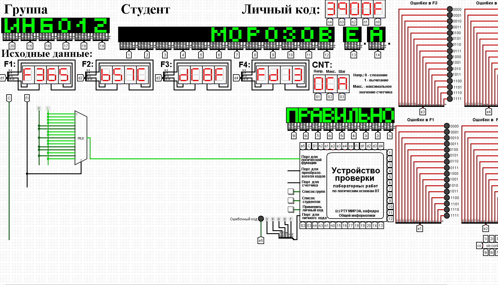
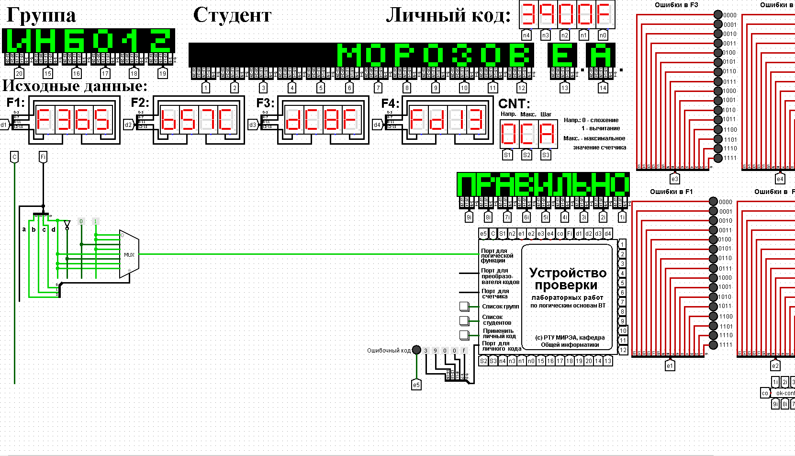
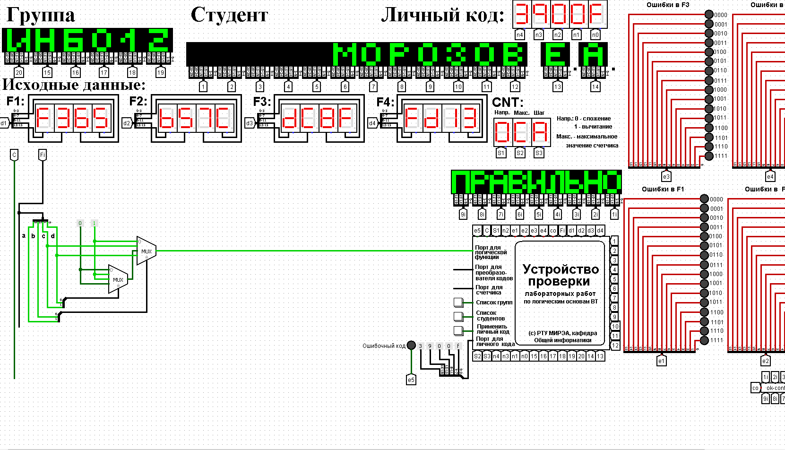
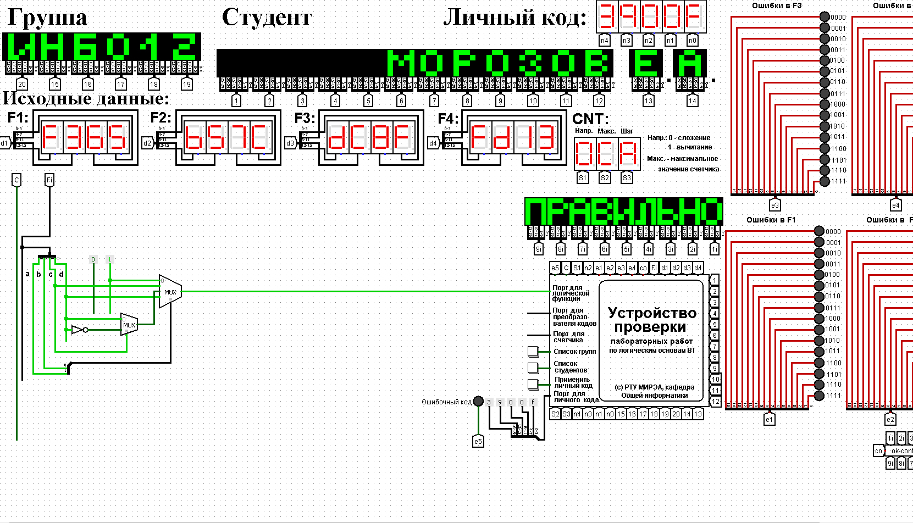

Количество информационных входов мультиплексора соответствует количеству значений логической функции. Поэтому просто подадим значения функции на соответствующие входы.
На адресные (выбирающие) входы мультиплексора подадим при помощи шины значения логических переменных. Несмотря на использование шины, следует помнить, что младшая переменная подается на младший адресный вход, а старшая – на старший.
Собранная и протестированная схема показана на рис. 1. Тестирование подтвердило правильность работы схемы.
Выполним реализацию заданной логической функции при помощи мультиплексора 8-1.
Мультиплексор 8-1 имеет 3 адресных входа, что не позволяет подать на эти входы все 4 логические переменные, как это было сделано в предыдущем случае.
Однако мы можем в качестве адресных переменных выбрать любые три из имеющихся, а оставшуюся четвертую рассматривать наравне с логическими константами как элемент исходных данных для информационных входов.
Удобнее всего в качестве адресных переменных взять три старшие переменные нашей функции, т.е. a, b, c. Тогда пары наборов, на которых эти переменные будут иметь одинаковое значение, будут располагаться в соседних строчках таблицы истинности и поэтому можно будет легко увидеть, как значение логической функции для каждой пары наборов соотносится со значением переменной d (рисунок 2).
Например, из рисунка 2 видно, что для первой, второй и четвертой строчек
Таким образом, мы перенесли одну переменную в область значений функции и получили таблицу, похожую на таблицу истинности функции от трех переменных. Таблица 2 отображает «сжатую» таблицу истинности.
Теперь, рассматривая переменную d наравне с константами 0 и 1 в качестве сигналов для информационных входов мультиплексора 8-1, можно по аналогии с предыдущим случаем выполнить реализацию требуемой функции. Разместим на рабочей области новый мультиплексор, установим ему количество выбирающих (адресных) входов равным трем, и выполним необходимые соединения (рисунок 3).
Тестирование подтвердило правильность работы схемы.
Рассмотрим реализацию заданной функции на минимальном количестве мультиплексоров 4-1.
Мультиплексор 4-1 имеет 2 адресных входа и 4 информационных. Это означает, что мы должны разбить исходную таблицу истинности на 4 фрагмента, за реализацию каждого из которых в принципе должен отвечать отдельный мультиплексор (назовем его операционным). Однако, необходимо учесть требования минимальности по отношению к количеству используемых мультиплексоров и ставить их только там, где без них нельзя обойтись. Также нам нельзя в рамках данной работы использовать другие логические схемы, за исключением отрицания.
По аналогии с реализацией на дешифраторах 2-4 (см. предыдущую работу), нам обязательно потребуется управляющий мультиплексор, который будет выбирать один из вариантов, предлагаемых операционными мультиплексорами (либо один из очевидных вариантов, если без операционных мультиплексоров можно обойтись).
Разобьем исходную таблицу истинности на зоны ответственности между операционными мультиплексорами, а заодно посмотрим, нельзя ли в некоторых случаях обойтись вообще без операционного мультиплексора (рисунок 4).
Как видно из рисунка 4, в трех случаях из четырех без операционного мультиплексора можно вполне обойтись, однако последний фрагмент таблицы требует реализации операционного мультиплексора. С учетом только что сказанного, схема логической функции на минимальном количестве мультиплексоров 4-1 будет такой, как показано на рисунок 5.
Тестирование подтвердило правильность работы схемы.
Реализуем логическую функцию, используя минимальную комбинацию мультиплексоров 4-1 и 2-1. В качестве отправной точки рассмотрим результаты, полученные в предыдущей реализации. Управляющий мультиплексор нельзя заменить на мультиплексор 2-1, поскольку у него на входах уникальные сигналы, а вот единственный операционный заменить можно, поскольку он имеет дело с константами. Из рисунка 4 выпишем отдельно фрагмент таблицы истинности, за который данный мультиплексор отвечает (таблица. 3).
Из таблицы видно, что когда «с» равно 0, то функция равна не «d», а когда «с» равно 1, то функция равна 0. Значит, переменную «с» можно рассматривать как адресную для мультиплексора 2-1, а не «d» и 0 будут поданы на его информационные входы. В результате получим схему, изображенную на рисунке 6.
Тестирование подтвердило правильность работы схемы.